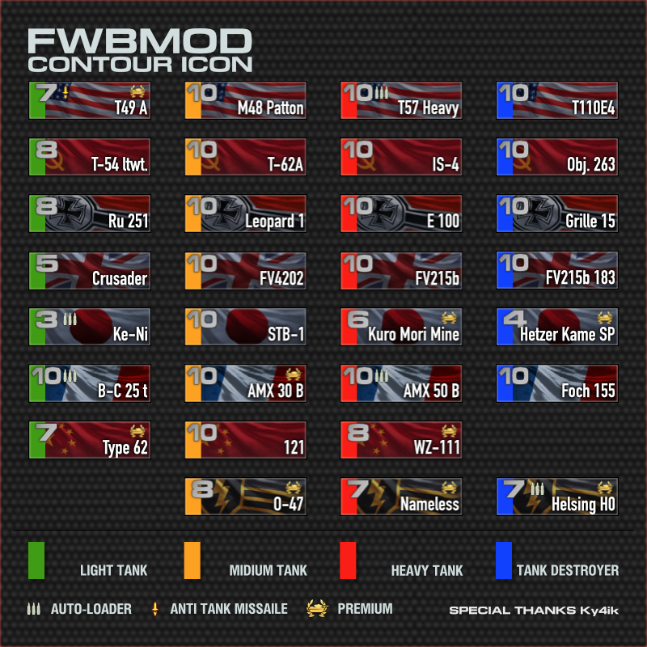

FWBM Contour Icon
Creator
Name: Freewheeler
Twitter:
@Freewheeler_
E-mali:
blitz@fwbmod.com
Website:
FWBMOD
Mod Information
ID: gfx.icon.fwbm_contour_icon
Description: This mod helps to quickly identify tank types of your ally and opponents.
Special Tanks
Ky4ik
© 2012–2017 Wargaming.net. All rights reserved.
